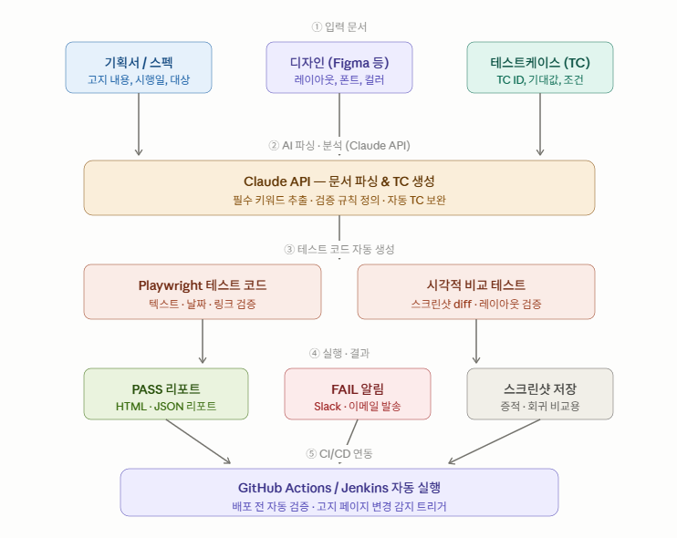

Web QA Automation Process Design
기획서, 디자인, 테스트케이스 기반의 QA 자동화 프로세스 설계 문서
QA
Automation
GitHub Pages
본 문서는 웹 페이지 QA 자동화를 위한 기본 프로세스, 테스트 범위, 실행 구조, 리스크 및 개선 방향을 정리하기 위한 문서입니다.
02. 목표
TC 표준화
기획서와 디자인 기준으로 테스트케이스를 구조화합니다.
자동 실행
반복 검증 항목을 Playwright, Cypress 등으로 자동화합니다.
리포트 생성
Pass / Fail / Block 결과를 자동으로 기록합니다.
03. 아키텍처
```기획서, 디자인, 테스트케이스를 입력으로 받아 자동화 테스트 코드 생성, 실행, 결과 리포트 및 CI/CD 연동까지 수행하는 전체 구조입니다.

설명
- 기획서, 디자인, 테스트케이스를 입력으로 사용합니다.
- Claude API가 문서를 분석하여 검증 규칙과 테스트케이스를 생성합니다.
- Playwright가 기능 테스트를 수행합니다.
- 시각적 비교 테스트가 레이아웃 변경을 검증합니다.
- PASS/FAIL 결과를 리포트 및 알림으로 전달합니다.
- GitHub Actions 또는 Jenkins와 연동하여 자동 실행합니다.
04. 실행 흐름
- 기획서 또는 디자인 문서를 확인한다.
- 검증해야 할 UI, 정책, 예외 케이스를 정리한다.
- 테스트케이스를 작성하거나 기존 TC를 업로드한다.
- 자동화 가능한 항목과 수동 검증 항목을 분리한다.
- 자동화 스크립트를 실행한다.
- 결과 리포트를 확인하고 결함을 등록한다.
05. 테스트케이스 예시
| ID | 검증 항목 | 기대 결과 | 자동화 가능 여부 |
|---|---|---|---|
| TC-001 | 페이지 진입 | 정상적으로 페이지가 노출된다. | 가능 |
| TC-002 | 고지 문구 확인 | 기획서와 동일한 문구가 노출된다. | 가능 |
| TC-003 | 버튼 클릭 | 정상 페이지로 이동한다. | 가능 |
| TC-004 | 디자인 정합성 | Figma 기준과 레이아웃이 일치한다. | 부분 가능 |
06. 리스크
- 기획서 변경 시 TC와 자동화 스크립트가 함께 수정되어야 합니다.
- 디자인 변경 시 이미지 기반 검증이 실패할 수 있습니다.
- 환경별 URL, 계정, 권한 조건을 별도로 관리해야 합니다.
- 자동화가 어려운 영역은 수동 QA 검증 기준을 유지해야 합니다.
07. Next Step
다음 단계에서는 아래 기능을 추가할 수 있습니다.
- Mermaid 기반 아키텍처 다이어그램
- QA 체크리스트 페이지 분리
- 자동화 결과 리포트 페이지
- 다크모드
- 검색 기능